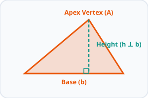
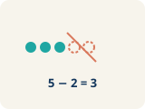
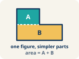

Unit 5 · Standard 6.G.1
Area of Regular Polygons
Key Vocabulary Level 1 support
Picture first, then the word, then a plain-language meaning. Say each word out loud.

A stop sign is a regular octagon — all 8 sides are the same length and all 8 angles are equal
Regular Polygon
A shape where all sides and all angles are equal.

Draw lines from the center of a hexagon to each corner → you get 6 equal triangles you can find the area of
Decompose
To break a shape into smaller, simpler shapes.
Each triangle inside a decomposed hexagon has a base = one side of the hexagon and height = distance from center to side
Triangle
A shape with three sides.

6 triangles, each with area 15 sq ft, combine to form a hexagon with total area = 6 × 15 = 90 sq ft
Composite
Made by putting two or more simple shapes together.
A house shape = rectangle (walls) + triangle (roof); find each area, then add them together
Composite figure
A shape made by putting two or more simple shapes together.

For a regular hexagon: Total Area = 6 × (½ × b × h), where b = side length and h = height of each triangle
Formula
A math rule written with symbols.
Key Ideas & Notes
What we're learning today
I can find the area of a regular polygon by decomposing it into triangles.
Notice
Your architecture firm is designing a hexagonal skylight for the lobby of a new museum.
Key idea
I can find the area of a regular polygon by decomposing it into triangles.
Words I'll use
🤔 Think About It
- What shape is the skylight?
- How many sides does a hexagon have?
- Can you see smaller shapes inside the hexagon?
See the notes in action: watch one worked all the way through, then try the next with the same steps.
Follow each step as your teacher solves it.
Problem: A regular hexagon is divided into 6 equal triangles from the center. Each triangle has a base of 6 ft and a height of 5.2 ft. What is the area of one triangle?
- 15.6 sq ft
- 31.2 sq ft
- 11.2 sq ft
- 15.6 ft
- Step 1 A = ½ × b × h = ½ × 6 × 5.2 = 15.6 square feet.
✅ Answer: A. 15.6 sq ft
Solve this one with your class using the same steps.
Problem: Using the triangle from the previous question, what is the total area of the hexagonal skylight?
- 93.6 sq ft
- 15.6 sq ft
- 187.2 sq ft
- 62.4 sq ft
- Step 1
- Step 2
Answer:
Now try one on your own. Show every step.
Problem: A regular hexagon is split into 6 triangles, each with base 4 cm and height 3.5 cm. What is the total area?
- 42 sq cm
- 21 sq cm
- 84 sq cm
- 14 sq cm
Turn & Talk — Discussion Points Level 1 support Level 2
Talk with a partner about each prompt. If you need help getting started, use the Level 1 sentence stems. Ready for more? Try the Level 2 question.
The hexagonal skylight has sides of 6 feet, and each triangle from the center has a height of 5.2 feet. Why is it helpful to break a hexagon into triangles to find its area?
Start here: We decompose the hexagon into triangles because we already know how to find a triangle's area.
💡 Need a hint?
Try starting with the word "regular polygon" or "decompose". Re-read the question and underline what it is asking you to compare or find. Use one number or word from the problem as your evidence.
Sentence starters (optional)
We decompose the hexagon into ___ because ___.Descomponemos el hexágono en ___ porque ___.
Once it is split, I can find each area using ___.Una vez dividido, puedo hallar cada área usando ___.
Listen for: Students explain that splitting the hexagon into 6 equal triangles lets them use the triangle area formula they already know, then combine the parts.
Predict whether this decompose-into-triangles strategy works for ANY regular polygon. Justify using the relationship between sides and triangles.
- This strategy ___ work for any regular polygon because ___.
- A regular polygon with n sides splits into ___ triangles, so ___.
You matched each regular polygon to its number of center triangles. What pattern connects the number of SIDES to the number of TRIANGLES, and why?
Start here: A regular polygon splits into the same number of triangles as it has sides.
💡 Need a hint?
Try starting with the word "regular polygon" or "decompose". Re-read the question and underline what it is asking you to compare or find. Use one number or word from the problem as your evidence.
Sentence starters (optional)
I split each polygon into ___ triangles.Dividí cada polígono en ___ triángulos.
The number of triangles equals the number of ___ because ___.El número de triángulos es igual al número de ___ porque ___.
Then I added the triangle areas to get ___.Luego sumé las áreas de los triángulos para obtener ___.
Listen for: A strong answer states the number of triangles equals the number of sides, because each side becomes the base of one triangle drawn to the center.
A classmate says you should ADD the 6 triangle areas, but another says MULTIPLY one area by 6. Are both correct? Justify when each works for a regular polygon.
- Both ___ correct because the triangles are ___.
- Multiplying works here since ___, but adding would be needed if ___.
The octagonal gazebo has 8 center triangles, each with base 5 ft and height 6 ft, and flooring costs $3 per sq ft. Walk through finding the total cost.
Start here: Find one triangle's area, multiply by 8, then multiply by the price.
💡 Need a hint?
Try starting with the word "regular polygon" or "decompose". Re-read the question and underline what it is asking you to compare or find. Use one number or word from the problem as your evidence.
Sentence starters (optional)
One triangle's area is 1/2 times 5 times 6, which equals ___ square feet.El área de un triángulo es 1/2 por 5 por 6, que es ___ pies cuadrados.
The octagon has 8 triangles, so the total area is ___ square feet.El octágono tiene 8 triángulos, entonces el área total es ___ pies cuadrados.
The cost is ___ times $3, which equals $___.El costo es ___ por $3, que es $___.
Listen for: Students compute one triangle = 15 sq ft, total = 8 x 15 = 120 sq ft, and cost = 120 x $3 = $360, explaining each step.
If the city switched the gazebo from an octagon to a hexagon but kept the same triangle base and height, would the flooring cost more or less? Generalize why.
- A hexagon would cost ___ because it has ___ triangles.
- In general, more sides means ___, so ___.
Interactive Unit Projects
Apply your math skills in these interactive dashboard games and coding labs.
Unit 5 Project — Area in Action
Capstone: apply area of polygons and composite figures to a real design challenge.
Tangram Polygon Architect
Compose polygons from tangram pieces and find their areas.
Coordinate Polygon Architect
Plot polygons on the coordinate plane and calculate their areas.
Area Architect — City Builder
Build a city by calculating areas of parallelograms, triangles, trapezoids, and composite figures.
Write About the Math The Writing Revolution
I can explain my steps using the words regular polygon, decompose, triangle, and composite.
1. Kernel Sentence subject + verb
Model: Regular Polygon is a shape where all sides and all angles are equal.Polígono regular es una figura donde todos los lados y ángulos son iguales.
Write a kernel sentence about regular polygon. Use a subject and a verb.Escribe una oración base sobre polígono regular. Usa un sujeto y un verbo.
2. Sentence Expansion because · but · so
Kernel: Regular Polygon matters in mathPolígono regular importa en matemáticas
Expand the kernel three ways. Add a reason, a contrast, and a result.
Regular Polygon matters in math because ___.Polígono regular importa en matemáticas porque ___.
Regular Polygon matters in math, but ___.Polígono regular importa en matemáticas, pero ___.
Regular Polygon matters in math, so ___.Polígono regular importa en matemáticas, entonces ___.
3. Sentence Types 4 ways to write a math idea
Tell one true fact about regular polygon.Di un hecho verdadero sobre regular polygon.
Regular polygon ___.
Ask a question about regular polygon.Haz una pregunta sobre regular polygon.
How does ___ ?¿Cómo ___ ?
Show excitement about regular polygon.Muestra entusiasmo sobre regular polygon.
Wow, ___ !¡Guau, ___ !
Tell a partner what to do with regular polygon.Dile a un compañero qué hacer con regular polygon.
First, ___ .Primero, ___ .
4. Explain Your Reasoning use a sentence starter
We decompose the hexagon into ___ because ___.Descomponemos el hexágono en ___ porque ___.
Once it is split, I can find each area using ___.Una vez dividido, puedo hallar cada área usando ___.
I split each polygon into ___ triangles.Dividí cada polígono en ___ triángulos.
Try It
Solve on your own. Check the answer key when you are done.
1. Why can a regular polygon's area be found by splitting it into congruent triangles?
- All the triangles are the same size, so you can multiply one triangle's area by the number of sides
- Polygons are always squares
- Triangles have no area
- Each triangle is different
2. A regular octagon splits into 8 triangles, each with area 5.5 m². What is the total area?
- 44 m²
- 13.5 m²
- 40 m²
- 48 m²
Stretch Your Thinking Level 2 enrichment
Challenge task — explain your reasoning in full sentences.
A regular hexagon and a regular pentagon both have triangles with the same base (6 ft) and the same height (5 ft). Which polygon has the greater total area? Explain why the number of sides matters.
Sentence starter: One triangle's area is ½ × ___ × ___ = ___. The hexagon has ___ triangles so its area is ___. The pentagon has ___ triangles so its area is ___. The ___ has more area because ___.
Reflect — Exit Ticket
A regular pentagon is decomposed into 5 triangles from its center. Each triangle has a base of 7 inches and a height of 4.8 inches. What is the total area of the pentagon?
- 84 sq in
- 16.8 sq in
- 168 sq in
- 84 in
Answer Key & Teacher Guide
- We Try (notes): A. 93.6 sq ft — Total area = 6 triangles × 15.6 sq ft = 93.6 square feet.
- You Try (notes): A. 42 sq cm — Each triangle: ½ × 4 × 3.5 = 7 sq cm. Total: 6 × 7 = 42 sq cm.
- Try It 1: A. All the triangles are the same size, so you can multiply one triangle's area by the number of sides — A regular polygon divides into equal triangles, so total area = (one triangle) × (number of triangles).
- Try It 2: A. 44 m² — 8 × 5.5 = 44 m².
- Exit Ticket: A. 84 sq in — One triangle: A = 1/2 x 7 x 4.8 = 16.8 sq in. Total = 5 x 16.8 = 84 square inches.
Writing (TWR) — what to look for
- Kernel sentence: A complete sentence needs a subject and a verb. Example: Regular Polygon is a shape where all sides and all angles are equal.
- Expansion: because gives a reason, but shows a contrast or exception, so shows a result. Answers vary; each must keep the kernel idea and add the correct kind of detail.
- Sentence types: Statement ends with a period, question with "?", exclamation with "!", and a command starts with an action verb (a "bossy" verb).